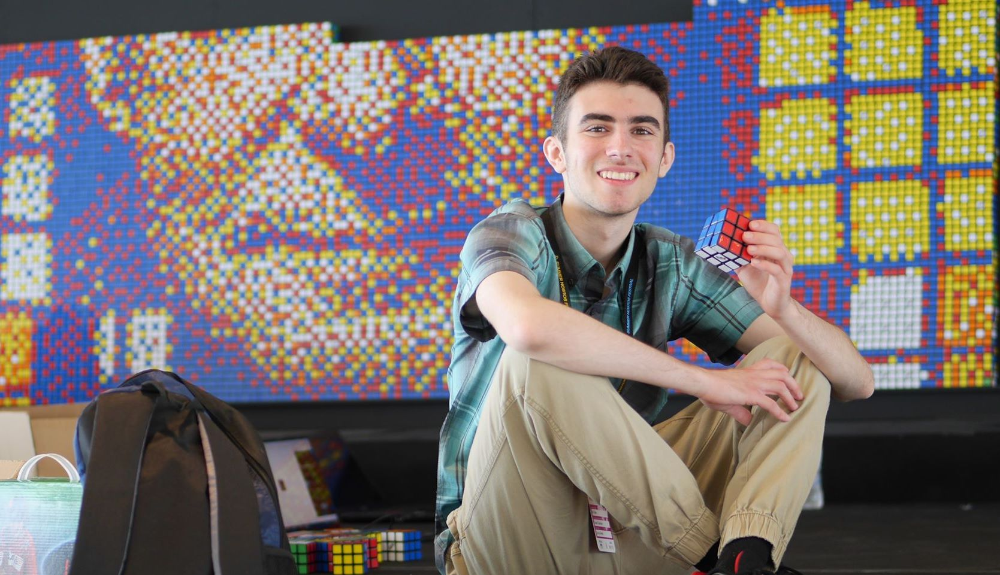

Hey there! My name is Daniel Goodman, but you may know me better in the cubing community as DGCubes. I started my YouTube channel on May 10, 2013 and have uploaded semi-consistently since then. Starting out, I focused mainly on unboxings and reviews of the latest speedcubes, but over time I've thrown story videos, Q&As, comedy videos, and plenty of other one-off ideas I have into the mix-- expect a lot of satire. (And for some extreme satire, check out my second channel where I upload... er, literal trash every once in a while.) As far as equipment goes, I edit with Adobe Premiere Elements 12, and I record with my Samsung Galaxy S9 for video and a Blue Yeti microphone for audio. I'm sponsored by CubeDepot, an online cube retailer based in New York. They've done a lot for me so make sure to check them out, and save 5% off with the discount code DGCubes at checkout!
I've got quite a few other cubing-related projects as well. I co-host the Dlsone Podcast with TheRubiksCubed, TheProgrammingCuber, Derpy Cuber, Hashtag Cuber, and JRCuber. I've also helped organize and commentate for Cubing at Home, an online cubing competition that has had thousands of participants to date. I do semi-regular livestreams where you can find me practicing speedcubing and NES Tetris, doing Q&As with chat, hosting new episodes of Who Wants To Be A Millionaire: Cubing Edition, and tons of other fun stuff in the future! It'd be great to see you stop by at DGCubesLive.
On the topic of speedcubing, I've been solving cubes since April 2012 and speedcubing competitively since January 2013. So far I've been to 56 competitions and I've completed 2231 official solves. Additionally, I was the 2018 US national champion in Pyraminx, and I've been ranked in the top 10 worldwide for Pyraminx average. I also practice and have results in every WCA event; one of my overall goals is to eventually be a platinum member, and so far I've made it up to bronze (which corresponds to at least a single result in every event). You can find the rest of my official results on my WCA profile. I've also speedsolved some unofficial events in the past; my personal favorites are Redi Cube, Curvy Copter, Kibiminx, and Master Pyraminx. I've always been an advocate for more events in the WCA, and these would be some of my top choices.
As far as non-cubing hobbies go, I love listening to rap music as well as recording some of my own; you can check out some of my stuff on Soundcloud and Spotify. I also play a lot of NES Tetris, and although I'm not at a competitive level yet (PB is 952,840 points on a level 18 start), I hope to keep improving and potentially compete in the CTWC someday. As far as education, I graduated with a Computer Science degree and a Linguistics certificate from Princeton University in 2022; I really enjoy programming and learning about linguistics in my free time so those were a great match for me. Since graduation, I've started working full-time as a software development engineer at Twitch, which has been great so far! I also love learning languages; I took classes in Spanish and American Sign Language at Princeton, and recently I've been self-studying Vietnamese.
If you want to reach out, you can e-mail me at dgcubed@gmail.com or comment on any of my videos or Twitch streams. I do read most of the comments I get, and I try to reply to as many as possible! Note that the only official DGCubes social media accounts are on YouTube, Facebook, and Twitch; if you find any others, they're not legitimate.
If you read this far, thanks for checking out this website!
